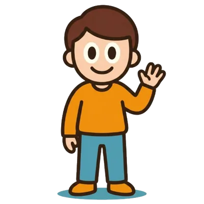

Ônibus em tempo real no mapa
Veja onde estão os carros ativos da sua linha e quanto falta para chegarem, com base na localização compartilhada pelos passageiros.
 WeBuz
WeBuzO WeBuz mostra no mapa, em tempo real, os ônibus da sua linha, com a localização compartilhada por quem já está dentro deles. Menos tempo parado no ponto e mais controle sobre o seu dia.
Desvio na Av. Brasil
12 confirmaramO problema

A informação existe. Ela está com os passageiros que já estão no ônibus. O WeBuz conecta essas pessoas.
A solução
O WeBuz é uma rede colaborativa. Quando você embarca, o app compartilha a sua posição e o seu ônibus aparece no mapa para quem está esperando no ponto. Quando outra pessoa embarca, é você quem passa a ver o ônibus chegando.
Cada viagem ajuda a melhorar a informação para todo mundo. E cada ajuda vale pontos que você troca por prêmios.
Ônibus lotado no Terminal Norte
8 confirmaramComo funciona
Digite o nome ou o número da linha e veja no mapa os ônibus que estão rodando agora.
Toque no ônibus no mapa ou informe o número do carro. O app segue compartilhando em segundo plano.
Viu atraso, acidente ou bloqueio? Mande um alerta em poucos toques. Outros passageiros confirmam.
Conte como foi a viagem e ajude a melhorar as rotas.
Cada ajuda vale pontos que você troca por prêmios.
Funcionalidades
Veja onde estão os carros ativos da sua linha e quanto falta para chegarem, com base na localização compartilhada pelos passageiros.
Diga para onde quer ir e o WeBuz sugere as linhas que levam você até lá, incluindo o trecho a pé até o ponto.
Atraso, bloqueio ou mudança na linha? Você fica sabendo na hora, porque quem está na rua avisa.

Comunidade
O WeBuz não depende só de sistemas oficiais. Ele fica mais preciso a cada passageiro que participa.
Seu trajeto de hoje é a informação de alguém amanhã.
Baixe o WeBuz, encontre sua linha e faça parte da comunidade que está mudando a forma de andar de ônibus.